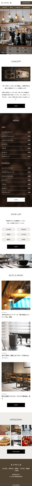
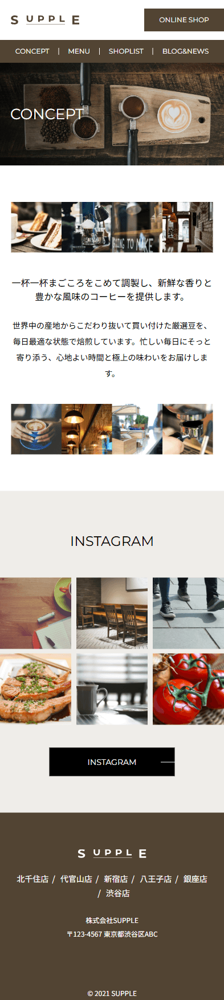
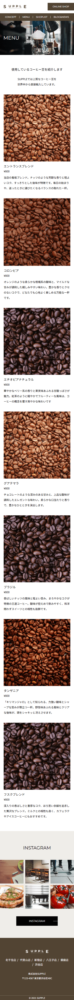
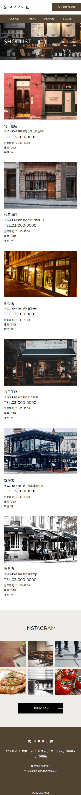
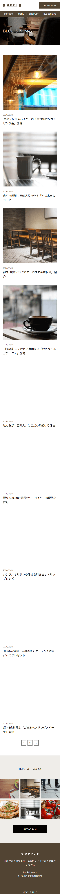
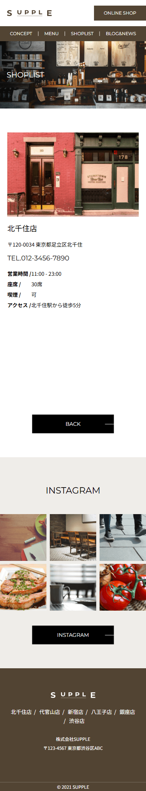
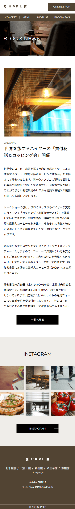

WordPress化サイト 架空カフェ[SUPPLE]サイト（WordPress化）
- 概要
- デザインカンプからコーディングした静的サイトをWordPress化しました。
デザインカンプ引用元：『模写修行』 - 担当範囲
- WP化コーディング / デザイン（追加ページ分）
- 製作期間
- 約15時間(元となる静的サイトのコーディング時間は除く)
- 使用技術・ツール
- WordPress / php / HTML / CSS(Sass) / Local / Figma / VScode
- サイトURL
- http://chisaki_dsgn/xxxxxxx
※GitHub Pagesを使用しているので遷移先は静的サイトです - ソースコード(GitHub)
- https://github.com/chisaki-dsgn/portfolio-cafe-supple
- 実装のポイント
-
- デザインカンプに未収録だった「店舗詳細」ページを自らデザイン・実装。ACFを使い、専門知識がなくても必要項目を入力しデータを更新できるよう管理画面を構築しました。特に、Googleマップは入力された住所をエンコードして表示するよう実装しており、ユーザーが複雑なコードを触らずに更新できるようにしました。
- 投稿記事のスラッグ名には投稿IDを紐づけ、記事タイトルが日本語でもURLが複雑化しないよう考慮しました。






